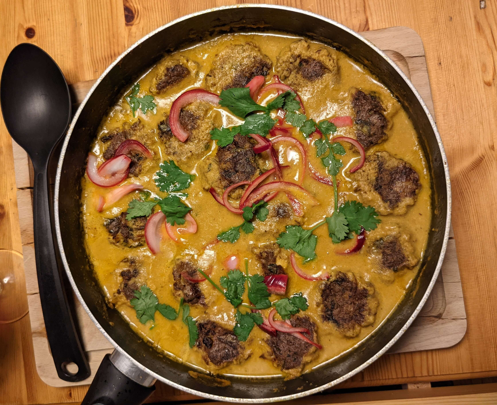

Makes main for 4 people.
- ½ red onion, thinly sliced
- 2 tbsp lemon juice
- 40g cashews
- 20g blanched almonds
- 6 cardamon pods
- 2 tsp cumin seeds
- 2 tsp coriander seeds
- 3 tbsp olive oil
- 1 onion, roughly chopped
- 4 garlic cloves, crushed
- 15g fresh ginger
- 1 green chilli
- 1 cinnamon stick
- 1 tsp ground turmeric
- 2 plum tomatoes
- 2 tbsp coriander leaves
Tofu Meatballs
- 2 tbsp olive oil
- 250g chestnut mushrooms, sliced
- 200g firm tofu, crumbled
- 3 garlic cloves, crushed
- 150g silken Tofu
- 2 tbsp tahini
- 1 tbsp soy sauce
- 30g breadcrumbs
- ½ tbsp cornflour
- 5 spring onions
- 10g coriander, finely chopped

-
Fry the courgette in light olive oil on both sides until brown. Set aside.
-
Boil the pasta until al dente, adding the frozen edamame beans 1 minute before draining.
Drain and run under cold water, then leave to dry. -
Finely chop the basil and parsley. Add salt, pepper, lemon zest.
-
Chop the Scamorza (or Mozzarella) into small pieces.
-
Mix everything together with good olive oil.
Notes:
Taken from Ottolenghi’s Flavour